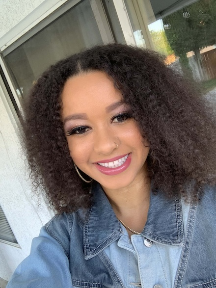

Hi, I'm Nancy 👋
I'm a data scientist with a multidisciplinary background in biology, public health, and laboratory research. I recently earned my M.S. in Applied Data Science from the University of San Diego, where I developed skills in machine learning, statistical modeling, data analysis, and data storytelling. Beyond my professional journey, I'm also a proud mom of energetic twin boys.
My academic journey began in the life sciences. I earned my B.S. in Biology from the University of California, Merced, followed by a Master of Public Health from West Coast University. Before transitioning into data science, I spent five years working as a Research and Development Scientist, with experience in assays, flow cytometry, and single-cell sorting for antibody development.
Today, I'm applying my scientific background and data science skills to explore complex datasets, build analytical solutions, and answer meaningful real-world questions. I'm especially interested in continuing to strengthen my skills in machine learning, statistical analysis, and data-driven problem solving while gaining experience across a variety of domains.
Whether I'm exploring cells in the lab 🔬🧫 or patterns in a dataset 💻📊, I'm driven by the same curiosity: asking meaningful questions, uncovering patterns, and using evidence to better understand complex problems.
Let's connect on LinkedIn!